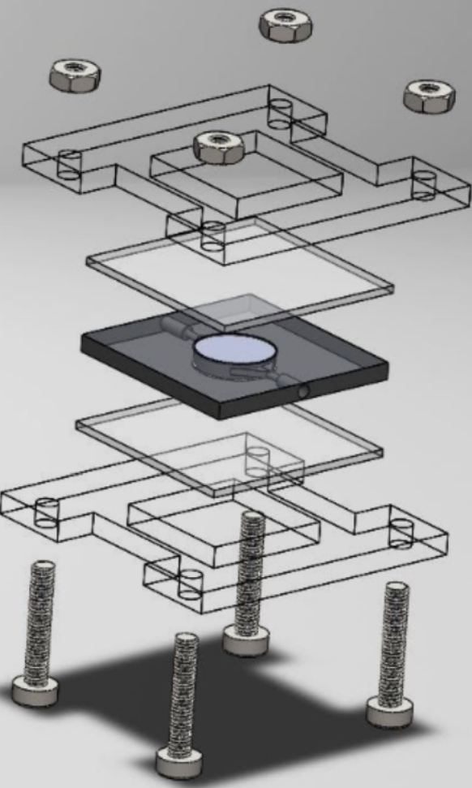
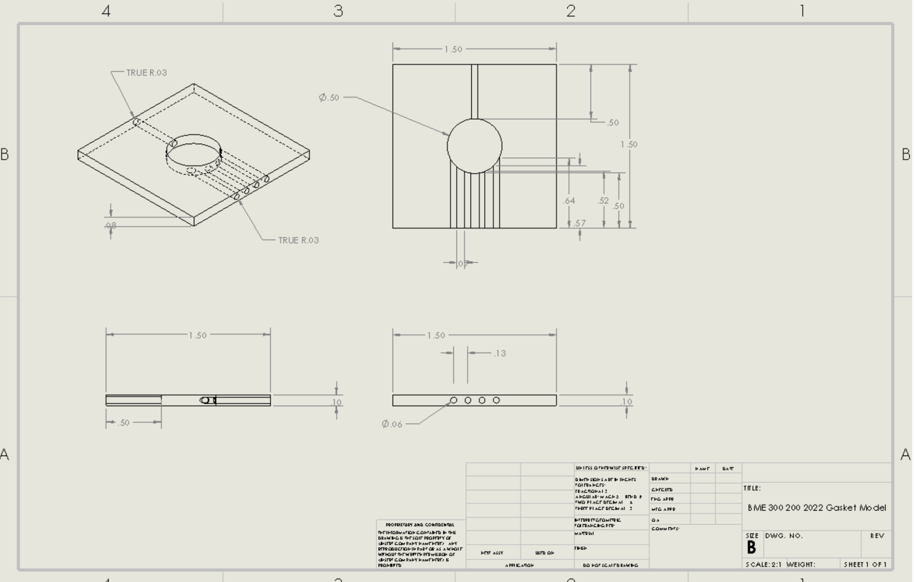
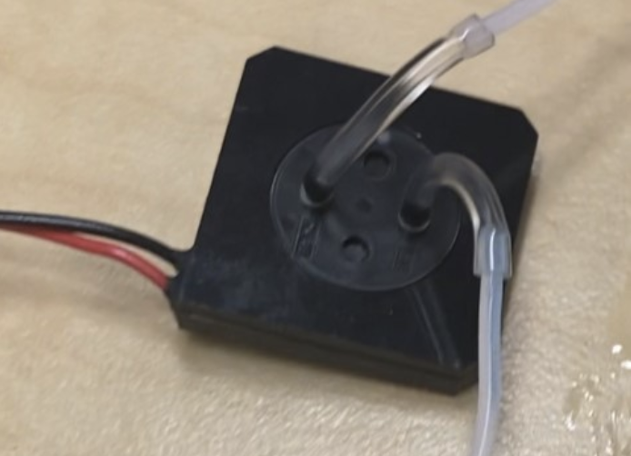
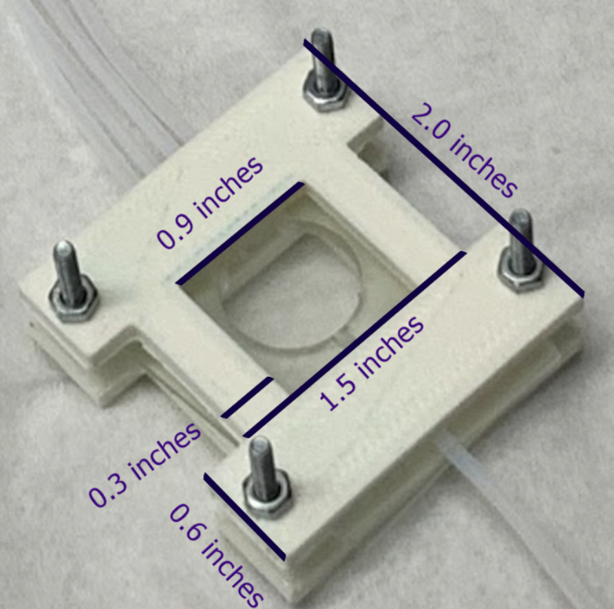
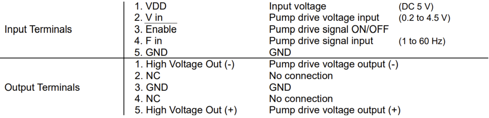
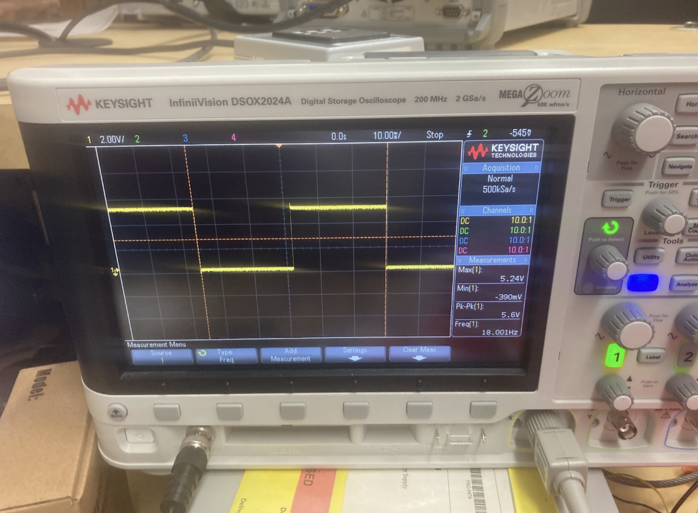
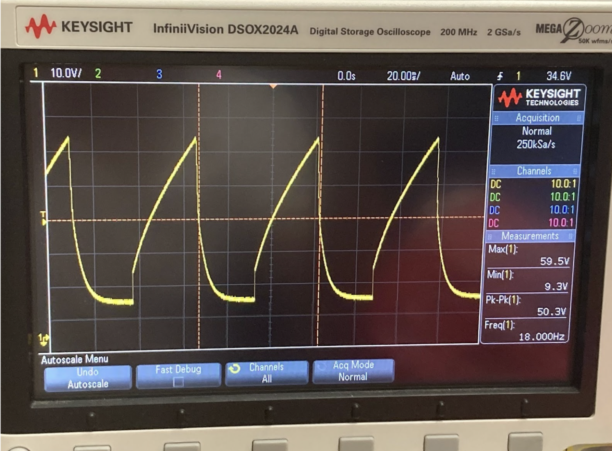
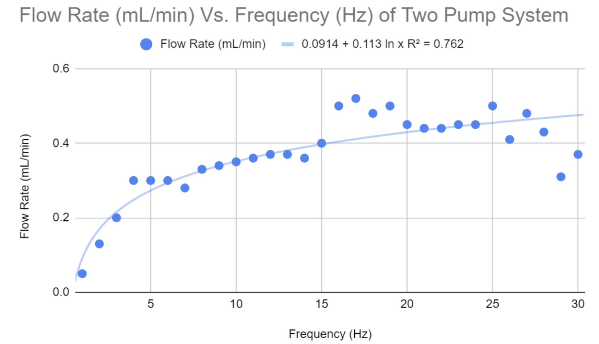

Dr. Paul Campagnola and his lab work to fabricate extracellular matrix (ECM) scaffolds to support research in the development
of new cancer diagnostic tools [1]. Currently, the lab’s fabrication process of ECM scaffolds is lengthy and inefficient due
to the inability to recollect protein solutions for future fabrications. Through the current process, many expensive and
undamaged proteins are wasted due to an inability of recollection. The team was tasked in designing a an automated closed
system capable of introducing and recovering unpolymerized protein solution for reuse in the fabrication process. A prototype
of the microfluidic device was fabricated, assembled, and connected to piezoelectric pumps and a driver board.
This device will support automated processing in the client’s lab’s fabrication, allowing for more efficient and
cost-effective ECM synthesis.
3D Models:

Figure I: 3D Model in SolidWorks. The chamber which fluid sits in is sandwitched in the middle by transparent acrylic. On
top of it is a plastic sheet.The four corners of the sheet are screwed to stable the structure.

Figure II: SolidWorks Sketch View of Chamber.
Final Design:

Figure III: Micropump Topview. The pump was purchased
online by previous teams.

Figure IV: The Final picture of the Chamber.
Testing:

Figure V: Datasheet for the purchased Micropumps.

Figure VI: Square waves from Oscilloscope to power micropump driver board.
The pumps weren't functioning when being directly connected to Arduino because of inproper frequency supply.
It was then connected to an Oscilloscope to reach the desirable frequency.

Figure VII: Takasago Standard Wave from Driver.

Figure VIII: Flow Rate vs Frequency Graph. A positive correlation can be
seen between flow rate and frequency from the graph. The Pearson Coefficient was calculated to be 0.7116,
suggesting a moderate relationship betweeen frequency and flow rate of the liquid(water is used for testing).
Result:
Liquid could be driven to the chamber with a maximum measured flow rate of .52 mL/min. Shortly
after the chamber was filled up with liquid, it began to leak. The pump system usually stopped
functioning when the frequency reached 18 HZ.
Future Considerations:
Clamping Mechanism:
The current clamping system isn't tight enough due to many factors.
Its minute size making the nuts and bolts hard to be tightened. The clamping force also
isn't distributed well ideally the surface. Certain points are prone to failure due to shear stress
and bending moment.
Oscilloscope:
The oscilloscope is big in size and is inconvenient to be carried around. Its function
is to change the frequency so that the driver board of the pump functions and achieves an ideal flow rate.
If an advanced code could be written to replace the function of oscilloscope, the project would be better.
Flow Rate:
The maximum flow rate obtained, .52 mL/min, is much lower than 3 mL/min, a requirement from
our client. In the future, an Arduino amplifying circuit system could be designed to potentially increase the flow
rate.